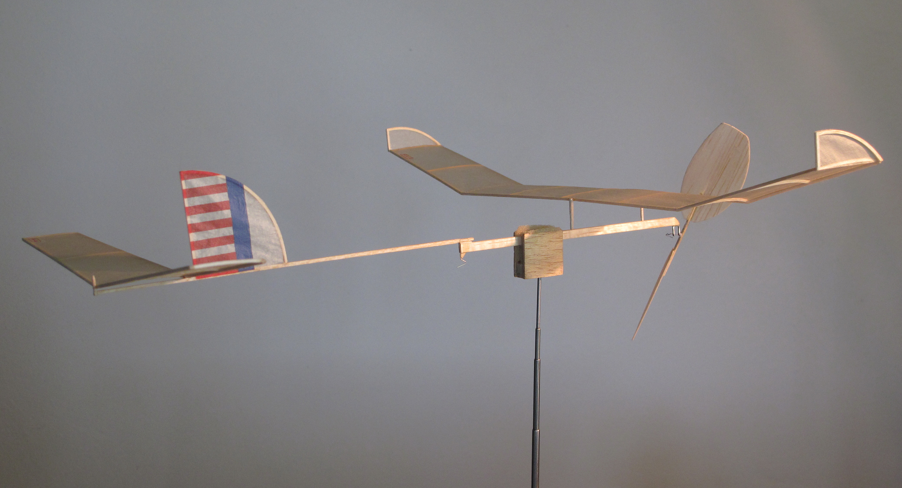
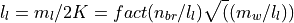

Hodson’s Flight Data
Read time: 7 minutes (1847 words)
Gary Hodson kept records for many of his flights with versions of the Wart A-6 model. He provided that data as part of my study in the form of an Excel spreadsheet. The columns in this spreadsheet are as follows:
Note
Units are in parentheses)
A: Flying site and Year
B: - Ceiling height (feet)
C: - Propeller pitch (degree)
D: - Motor weight in gram)
E: - Motor width (inch/1000)
F:
 - Motor thickness (inch/1000)
- Motor thickness (inch/1000)G: - Motor cross section area = E*F (inch**2)
H: - Motor length (inch)
I: :math’n - Winding Turns (turn)
J: Turn density = I/H (turn/inch)
K:
 - Torque (inch * ounce)
- Torque (inch * ounce)L: :math:1t_m` - time (minute)
M: - Time (second)
N:
 - Flight time = L*60 + M (second)
- Flight time = L*60 + M (second)O: Average propeller speed = I/N (turn/second)
P: :math: m_v` - Motor volume = G * H (inch ** 3)
Q: = P / D (inch**3/gram)
R: = P/I (inch**3/turn)
S: = R / I (inch**3/turn**2)
T: He = B/(483 * U)
U: Wm/W = D/(1.2 + D)
V: = 6.61 * D
W: Nbreak = 45.257 * H/sqrt(D/H) (turn)
X: %Nb = I / W
Y: t/Rd = N/J
Z: Navg/pitch = N/J
AA: Navg/Q = O/K
It appears that Gary is using Mark Drela’s paper to calculate the energy available for a given motor, and a variation of Don Slusarczyk’s scheme to calculate the motor breaking winds.
Based on the formulas in this spreadsheet, the recorder motor length is actually twice the loop length.
Breaking turns
Don Slusarczyk published an article on calculating the breaking turns of a rubber motor. His formulas were as follows:
Given:
n_br = break turns
m_l = loop length * 2
m_w motor weight
The K factor is given as

Example Data
Using Gary’s record setting flight data, let’s check things out using python and the Python units package pint:
= 147 * feet
= 48 * degree
= 3.1 * gram
- = 36/1000 * inch
= 38/1000 * inch
= 18 * inch
 = 3660 * turn
= 3660 * turn- = 3.1 * inch * ounce
= 10 * minute
= 18 * second
Here is the code that processes this data:
And, here is the result:
python: can't open file '/Users/rblack/_projects/ansible-workflow/rst/../src/wart_data.py': [Errno 2] No such file or directory